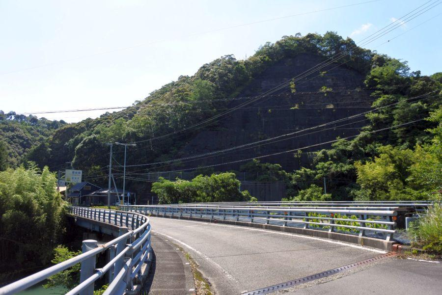
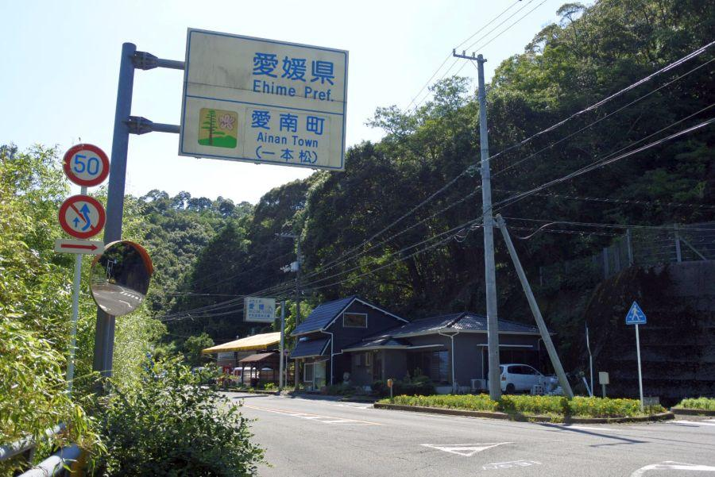

県境越えを越えたことを知る手がかりあれこれ < 篠川橋 / 高知県宿毛市・愛媛県愛南町 >

四国四県(しこくしけん)の県境は 全て陸地で接しています。
阿波(あわ) ＝ 徳島県
土佐(とさ) ＝ 高知県
伊予(いよ) ＝ 愛媛県
讃岐(さぬき) ＝ 香川県
その県界は 紆余曲折あったが、現在は律令制時代に定められたものが ほぼ踏襲されている。
この場所は高知県・愛媛県の県境の一つ。国道56号であり 真っ直ぐ進んで川を越えると愛媛県愛南町。
ただしそれは近年供用されたバイパスであり、少し味気が無い。右に折れて旧道を進み 県が変わる実感を得てみましょう。
高知・愛媛県境、篠川橋

篠川橋(高知県宿毛市・愛媛県愛南町)
この方向で進んだ場合 手前が高知県、奥が愛媛県。元々が国道56号なので 片側一車線確保されているが、それぞれ一車線ずつ独立した橋となっている。
これは当初一車線で開通したものが、後年の道路拡幅等により もう一本道路橋を追加したものと思われる。
とすると、先に出来た橋は上流側・下流側 どちらだろうか？
この写真だけで判断するとすれば 奥(＝上流側)の橋の方が古いと推察できる。
橋の渡り口にコンクリート製の親柱が見えます。
現在の橋では それが設けられないか、もっと簡素なものになるからです。
確証を得たわけではありませんが、調べてみると 先に架かった橋は昭和10年(1935)3月の架橋。
アドルフ・ヒトラーがヴェルサイユ条約を破棄して、ナチス・ドイツが再軍備を始めた年月にあたります。
県越え判断材料1・ナンバープレート

愛媛県に入りました。
こちらは県境にあったタバコ屋さんなのですが、既に廃業されている様子。奥に見えるバイパス(トンネル)が開通して以来、交通量はガタ落ちでしょうから これも時代の流れというものでしょうか。
自家用車が停まっているので 元気に暮らされている印象です。
その、自家用車が県が変わったことを知る 一番の手がかり。
自動車登録番号標こと "ナンバープレート"
これが県が変わったことを知る、最も大きな手掛かりです。
電話の市外局番や 路線バスの運行は、県境特例で 隣県のものが使用されている例があるが、自動車の登録に関しては 忠実に県ごと。この場所だと愛媛県域なので 「愛媛」ナンバー。
この場所から街は 高知県宿毛市の方が近いのですが、諸手続きを行う場合は、利便性如何関わらず愛媛県側へ出向く必要があります。
お買物は その縛りはないので、多くの方が宿毛に出るようです。
そのような事情があり、宿毛市は高知県・愛媛県のグルメだけでなく 海を通じて九州大分の食材も流入している、三県ミックスの食文化が存在する 珍しい街になっています。
県越え判断材料2・選挙候補者ポスター
県境の篠川橋を再び渡り返し、高知県に戻ります。橋はそれぞれ一方通行なので 上流側を渡ります。
道路標識の旧規格、通称 "白看板" がこちら側に設置されていることも、上流側の橋の方が古いと推察する材料の一つです。今でこそ歩道が設置されていますが、当時そのようなものはなく この幅で対面通行だったんじゃないかなあと思います。
選挙候補者のポスター
選挙区もいくら隣県の方が近いと言っても 都道府県単位です。隣り合わせ・向かい合わせであったとしても 県が違えばポスターに登場する候補者が変わります。
ただし、平成27年(2015)の公職選挙法の改正により 合区制度が導入されたため、一部例外が存在する。
鳥取県と島根県
徳島県と高知県
高知県はその制度が適用される地域のため、選挙ポスターにより県境を知る手掛かりとしては 必ずしもあてはまらなくなっています。
高知 / 愛媛県境・篠川橋の場所
< 自家用車 >
高松駅から 約4時間、290km
松山空港から 約2時間30分、148km
< 路線バス >
JR宇和島駅・土佐くろしお鉄道宿毛駅 → 県界停留所下車
※ 主な地点からの最速・最短距離